Publications
Tech Reports
-
Beyond Behavior Cloning in Autonomous Driving: A Survey of Closed-Loop Training Techniques
P. Karkus, M. Igl, Y. Chen, K. Chitta, J. Packer, B. Douillard, T. Tian, A. Naumann, G. Garcia-Cobo, S. Tan, A. Degirmenci, A. Popov, N. Smolyanskiy, U. Muller,B. Ivanovic
, M. Pavone
[BibTeX] [PDF] [Paper] Tech Report 2025@techreport{KarkusIglEtAl2025, author = {Karkus, P. and Igl, M. and Chen, Y. and Chitta, K. and Packer, J. and Douillard, B. and Tian, T. and Naumann, A. and Garcia-Cobo, G. and Tan, S. and Degirmenci, A. and Popov, A. and Smolyanskiy, N. and Muller, U. and Ivanovic, B. and Pavone, M.}, title = {Beyond Behavior Cloning in Autonomous Driving: A Survey of Closed-Loop Training Techniques}, booktitle = {{NVIDIA}}, month = dec, year = {2025}, url = {https://d1qx31qr3h6wln.cloudfront.net/publications/beyond_bc_survey_preprint.pdf}, puburl = {https://research.nvidia.com/publication/2025-12_beyond-behavior-cloning-autonomous-driving-survey-closed-loop-training} }
-
Alpamayo-R1: Bridging Reasoning and Action Prediction for Generalizable Autonomous Driving in the Long Tail
Y. Wang, W. Luo, J. Bai, Y. Cao, T. Che, K. Chen, Y. Chen, J. Diamond, Y. Ding, W. Ding, L. Feng, G. Heinrich, J. Huang, P. Karkus, B. Li, P. Li, T. Lin, D. Liu, M. Liu, L. Liu, Z. Liu, J. Lu, Y. Mao, P. Molchanov, L. Pavao, Z. Peng, M. Ranzinger, E. Schmerling, S. Shen, Y. Shi, S. Tariq, R. Tian, T. Wekel, X. Weng, T. Xiao, E. Yang, X. Yang, Y. You, X. Zeng, W. Zhang,B. Ivanovic
, M. Pavone
[BibTeX] [PDF] [arXiv] [Paper] [Code] [Press Release] Tech Report 2025@techreport{WangLuoEtAl2025, author = {Wang, Y. and Luo, W. and Bai, J. and Cao, Y. and Che, T. and Chen, K. and Chen, Y. and Diamond, J. and Ding, Y. and Ding, W. and Feng, L. and Heinrich, G. and Huang, J. and Karkus, P. and Li, B. and Li, P. and Lin, T. and Liu, D. and Liu, M. and Liu, L. and Liu, Z. and Lu, J. and Mao, Y. and Molchanov, P. and Pavao, L. and Peng, Z. and Ranzinger, M. and Schmerling, E. and Shen, S. and Shi, Y. and Tariq, S. and Tian, R. and Wekel, T. and Weng, X. and Xiao, T. and Yang, E. and Yang, X. and You, Y. and Zeng, X. and Zhang, W. and Ivanovic, B. and Pavone, M.}, title = {Alpamayo-R1: Bridging Reasoning and Action Prediction for Generalizable Autonomous Driving in the Long Tail}, booktitle = {{NVIDIA}}, month = oct, year = {2025}, url = {https://arxiv.org/abs/2511.00088}, code = {https://github.com/NVlabs/alpamayo}, puburl = {https://research.nvidia.com/publication/2025-10_alpamayo-r1}, pressurl = {https://nvidianews.nvidia.com/news/alpamayo-autonomous-vehicle-development} }
Publications
Preprints
-
Accelerating Structured Chain-of-Thought in Autonomous Vehicles
Y. Gu, Y. Wang, Y. Chen, Y. You, W. Luo, Y. Wang, W. Ding, B. Li, H. Yang,B. Ivanovic
, M. Pavone
[BibTeX] [PDF] [arXiv] arxiv:2602.02864@misc{GuWangEtAl2026, author = {Gu, Y. and Wang, Y. and Chen, Y. and You, Y. and Luo, W. and Wang, Y. and Ding, W. and Li, B. and Yang, H. and Ivanovic, B. and Pavone, M.}, title = {Accelerating Structured Chain-of-Thought in Autonomous Vehicles}, booktitle = {{arxiv:2602.02864}}, month = feb, year = {2026}, url = {https://arxiv.org/abs/2602.02864} }
-
FoundationMotion: Auto-Labeling and Reasoning about Spatial Movement in Videos
Y. Gan, L. Zhu, D. Shan, B. Shi, H. Yin,B. Ivanovic
, S. Han, T. Darrell, J. Malik, M. Pavone, B. Li
[BibTeX] [PDF] [arXiv] arxiv:2512.10927@misc{GanZhuEtAl2025, author = {Gan, Y. and Zhu, L. and Shan, D. and Shi, B. and Yin, H. and Ivanovic, B. and Han, S. and Darrell, T. and Malik, J. and Pavone, M. and Li, B.}, title = {FoundationMotion: Auto-Labeling and Reasoning about Spatial Movement in Videos}, booktitle = {{arxiv:2512.10927}}, month = dec, year = {2025}, url = {https://arxiv.org/abs/2512.10927} }
-
Towards Efficient and Effective Multi-Camera Encoding for End-to-End Driving
J. Yang, Z. Chen, Y. You, Y. Wang, Y. Li, Y. Chen, B. Li,B. Ivanovic
, M. Pavone, Y. Wang
[BibTeX] [PDF] [arXiv] arxiv:2512.10947@misc{YangChenEtAl2025, author = {Yang, J. and Chen, Z. and You, Y. and Wang, Y. and Li, Y. and Chen, Y. and Li, B. and Ivanovic, B. and Pavone, M. and Wang, Y.}, title = {Towards Efficient and Effective Multi-Camera Encoding for End-to-End Driving}, booktitle = {{arxiv:2512.10947}}, month = dec, year = {2025}, url = {https://arxiv.org/abs/2512.10947} }
-
E3D-Bench: A Benchmark for End-to-End 3D Geometric Foundation Models
W. Cong, Y. Liang, Y. Zhang, Z. Yang, Y. Wang,B. Ivanovic
, M. Pavone, C. Chen, Z. Wang, Z. Fan
[BibTeX] [PDF] [arXiv] arxiv:2506.01933@misc{CongLiangEtAl2025, author = {Cong, W. and Liang, Y. and Zhang, Y. and Yang, Z. and Wang, Y. and Ivanovic, B. and Pavone, M. and Chen, C. and Wang, Z. and Fan, Z.}, title = {E3D-Bench: A Benchmark for End-to-End 3D Geometric Foundation Models}, booktitle = {{arxiv:2506.01933}}, month = jun, year = {2025}, url = {https://arxiv.org/abs/2506.01933} }
-
Distributed NeRF Learning for Collaborative Multi-Robot Perception
H. Zhao,B. Ivanovic
, N. Mehr
[BibTeX] [PDF] [arXiv] arxiv:2409.20289@misc{ZhaoIvanovicEtAl2024, author = {Zhao, H. and Ivanovic, B. and Mehr, N.}, title = {Distributed NeRF Learning for Collaborative Multi-Robot Perception}, booktitle = {{arxiv:2409.20289}}, month = sep, year = {2024}, url = {https://arxiv.org/abs/2409.20289} }
-
WOLF: Captioning Everything with a World Summarization Framework
B. Li, L. Zhu, R. Tian, S. Tan, Y. Chen, Y. Lu, Y. Cui, S. Veer, M. Ehrlich, J. Philion, X. Weng, F. Xue, L. Fan, Y. Zhu, J. Kautz, A. Tao, M. Liu, S. Fidler,B. Ivanovic
, T. Darrell, J. Malik, S. Han, M. Pavone
[BibTeX] [PDF] [arXiv] arxiv:2407.18908@misc{LiZhuEtAl2024, author = {Li, B. and Zhu, L. and Tian, R. and Tan, S. and Chen, Y. and Lu, Y. and Cui, Y. and Veer, S. and Ehrlich, M. and Philion, J. and Weng, X. and Xue, F. and Fan, L. and Zhu, Y. and Kautz, J. and Tao, A. and Liu, M. and Fidler, S. and Ivanovic, B. and Darrell, T. and Malik, J. and Han, S. and Pavone, M.}, title = {WOLF: Captioning Everything with a World Summarization Framework}, booktitle = {{arxiv:2407.18908}}, month = jul, year = {2024}, url = {https://arxiv.org/abs/2407.18908} }
-
Learning Traffic Crashes as Language: Datasets, Benchmarks, and What-If Causal Analyses
Z. Fan, P. Wang, Y. Zhao, Y. Zhao,B. Ivanovic
, Z. Wang, M. Pavone, H. F. Yang
[BibTeX] [PDF] [arXiv] arxiv:2406.10789@misc{FanWangEtAl2024, author = {Fan, Z. and Wang, P. and Zhao, Y. and Zhao, Y. and Ivanovic, B. and Wang, Z. and Pavone, M. and Yang, H. F.}, title = {Learning Traffic Crashes as Language: Datasets, Benchmarks, and What-If Causal Analyses}, booktitle = {{arxiv:2406.10789}}, month = jun, year = {2024}, url = {https://arxiv.org/abs/2406.10789} }
-
InstantSplat: Sparse-View Gaussian Splatting in Seconds
Z. Fan, W. Cong, K. Wen, K. Wang, J. Zhang, X. Ding, D. Xu,B. Ivanovic
, M. Pavone, G. Pavlakos, Z. Wang, Y. Wang
[BibTeX] [PDF] [arXiv] arxiv:2403.20309@misc{FanCongEtAl2024, author = {Fan, Z. and Cong, W. and Wen, K. and Wang, K. and Zhang, J. and Ding, X. and Xu, D. and Ivanovic, B. and Pavone, M. and Pavlakos, G. and Wang, Z. and Wang, Y.}, title = {InstantSplat: Sparse-View Gaussian Splatting in Seconds}, booktitle = {{arxiv:2403.20309}}, month = mar, year = {2024}, url = {https://arxiv.org/abs/2403.20309} }
2026
-
Counterfactual VLA: Self-Reflective Vision-Language-Action Model with Adaptive Reasoning
Z. Peng, W. Ding, Y. You, Y. Chen, W. Luo, T. Tian, Y. Cao, A. Sharma, D. Xu,B. Ivanovic
, B. Li, B. Zhou, Y. Wang, M. Pavone
[BibTeX] [PDF] [arXiv] IEEE/CVF Conference on Computer Vision and Pattern Recognition (CVPR) 2026@Inproceedings{PengDingEtAl2025, author = {Peng, Z. and Ding, W. and You, Y. and Chen, Y. and Luo, W. and Tian, T. and Cao, Y. and Sharma, A. and Xu, D. and Ivanovic, B. and Li, B. and Zhou, B. and Wang, Y. and Pavone, M.}, title = {Counterfactual VLA: Self-Reflective Vision-Language-Action Model with Adaptive Reasoning}, booktitle = {{IEEE/CVF Conference on Computer Vision and Pattern Recognition (CVPR)}}, month = jun, year = {2026}, url = {https://arxiv.org/abs/2512.24426} }
-
Latent Chain-of-Thought World Modeling for End-to-End Driving
S. Tan, K. Chitta, Y. Chen, R. Tian, Y. You, Y. Wang, W. Luo, Y. Cao, P. Krahenbuhl, M. Pavone,B. Ivanovic
[BibTeX] [PDF] [arXiv] IEEE/CVF Conference on Computer Vision and Pattern Recognition (CVPR) 2026@Inproceedings{TanChittaEtAl2025, author = {Tan, S. and Chitta, K. and Chen, Y. and Tian, R. and You, Y. and Wang, Y. and Luo, W. and Cao, Y. and Krahenbuhl, P. and Pavone, M. and Ivanovic, B.}, title = {Latent Chain-of-Thought World Modeling for End-to-End Driving}, booktitle = {{IEEE/CVF Conference on Computer Vision and Pattern Recognition (CVPR)}}, month = jun, year = {2026}, url = {https://arxiv.org/abs/2512.10226} }
-
dVLM-AD: Enhance Diffusion Vision-Language-Model for Driving via Controllable Reasoning
Y. Ma, Y. Cao, W. Ding, S. Zhang, Y. Wang,B. Ivanovic
, M. Jiang, M. Pavone, C. Xiao
[BibTeX] [PDF] [arXiv] IEEE/CVF Conference on Computer Vision and Pattern Recognition Findings (CVPR Findings) 2026@Inproceedings{MaCaoEtAl2025, author = {Ma, Y. and Cao, Y. and Ding, W. and Zhang, S. and Wang, Y. and Ivanovic, B. and Jiang, M. and Pavone, M. and Xiao, C.}, title = {dVLM-AD: Enhance Diffusion Vision-Language-Model for Driving via Controllable Reasoning}, booktitle = {{IEEE/CVF Conference on Computer Vision and Pattern Recognition Findings (CVPR Findings)}}, month = jun, year = {2026}, url = {https://arxiv.org/abs/2512.04459} }
-
RoaD: Rollouts as Demonstrations for Closed-Loop Supervised Fine-Tuning of Autonomous Driving Policies
G. Garcia-Cobo, M. Igl, P. Karkus, Z. Zhang, M. Watson, Y. Chen,B. Ivanovic
, M. Pavone
[BibTeX] [PDF] [arXiv] IEEE/CVF Conference on Computer Vision and Pattern Recognition Findings (CVPR Findings) 2026@Inproceedings{GarciaCoboIglEtAl2025, author = {Garcia-Cobo, G. and Igl, M. and Karkus, P. and Zhang, Z. and Watson, M. and Chen, Y. and Ivanovic, B. and Pavone, M.}, title = {RoaD: Rollouts as Demonstrations for Closed-Loop Supervised Fine-Tuning of Autonomous Driving Policies}, booktitle = {{IEEE/CVF Conference on Computer Vision and Pattern Recognition Findings (CVPR Findings)}}, month = jun, year = {2026}, url = {https://arxiv.org/abs/2512.01993} }
-
UDON: Uncertainty-Weighted Distributed Optimization for Multi-Robot Neural Implicit Mapping under Extreme Communication Constraints
H. Zhao, X. Zhou,B. Ivanovic
, N. Mehr
[BibTeX] [PDF] [arXiv] IEEE International Conference on Robotics and Automation (ICRA) 2026@Inproceedings{ZhaoIvanovicEtAl2025, author = {Zhao, H. and Zhou, X. and Ivanovic, B. and Mehr, N.}, title = {UDON: Uncertainty-Weighted Distributed Optimization for Multi-Robot Neural Implicit Mapping under Extreme Communication Constraints}, booktitle = {{IEEE International Conference on Robotics and Automation (ICRA)}}, month = may, year = {2026}, url = {https://arxiv.org/abs/2509.12702} }
-
Safety Evaluation of Motion Plans Using Trajectory Predictors as Forward Reachable Set Estimators
K. Chakraborty, Z. Feng, S. Veer, A. Sharma, W. Ding, S. Topan,B. Ivanovic
, M. Pavone, S. Bansal
[BibTeX] [PDF] [arXiv] IEEE Robotics and Automation Letters (RA-L) 2026@article{ChakrabortyFengEtAl2026, author = {Chakraborty, K. and Feng, Z. and Veer, S. and Sharma, A. and Ding, W. and Topan, S. and Ivanovic, B. and Pavone, M. and Bansal, S.}, title = {Safety Evaluation of Motion Plans Using Trajectory Predictors as Forward Reachable Set Estimators}, journal = {{IEEE Robotics and Automation Letters (RA-L)}}, year = {2026}, url = {https://arxiv.org/abs/2507.22389} }
2025
-
Pseudo-Simulation for Autonomous Driving
W. Cao, M. Hallgarten, T. Li, D. Dauner, X. Gu, C. Wang, Y. Miron, M. Aiello, H. Li, I. Gilitschenski,B. Ivanovic
, M. Pavone, A. Geiger, K. Chitta
[BibTeX] [PDF] [arXiv] Conference on Robot Learning (CoRL) 2025@Inproceedings{CaoHallgartenEtAl2025, author = {Cao, W. and Hallgarten, M. and Li, T. and Dauner, D. and Gu, X. and Wang, C. and Miron, Y. and Aiello, M. and Li, H. and Gilitschenski, I. and Ivanovic, B. and Pavone, M. and Geiger, A. and Chitta, K.}, title = {Pseudo-Simulation for Autonomous Driving}, booktitle = {{Conference on Robot Learning (CoRL)}}, month = nov, year = {2025}, url = {https://arxiv.org/abs/2506.04218} }
-
Extrapolated Urban View Synthesis Benchmark
X. Han, Z. Jia, B. Li, Y. Wang,B. Ivanovic
, Y. You, L. Liu, Y. Wang, M. Pavone, C. Feng, Y. Li
[BibTeX] [PDF] [arXiv] IEEE/CVF International Conference on Computer Vision (ICCV) 2025@Inproceedings{HanJiaEtAl2025, author = {Han, X. and Jia, Z. and Li, B. and Wang, Y. and Ivanovic, B. and You, Y. and Liu, L. and Wang, Y. and Pavone, M. and Feng, C. and Li, Y.}, title = {Extrapolated Urban View Synthesis Benchmark}, booktitle = {{IEEE/CVF International Conference on Computer Vision (ICCV)}}, month = oct, year = {2025}, url = {https://arxiv.org/abs/2412.05256} }
-
Bias in Gender Bias Benchmarks: How Spurious Features Distort Evaluation
Y. Hirota, R. Hachiuma, B. Li, X. Lu, M. R. Boone,B. Ivanovic
, Y. Choi, Y. Nakashima
[BibTeX] IEEE/CVF International Conference on Computer Vision (ICCV) 2025@Inproceedings{HirotaHachiumaEtAl2025, author = {Hirota, Y. and Hachiuma, R. and Li, B. and Lu, X. and Boone, M. R. and Ivanovic, B. and Choi, Y. and Nakashima, Y.}, title = {Bias in Gender Bias Benchmarks: How Spurious Features Distort Evaluation}, booktitle = {{IEEE/CVF International Conference on Computer Vision (ICCV)}}, month = oct, year = {2025} }
-
Countrywide Natural Experiment Links Built Environment to Physical Activity
T. Althoff,B. Ivanovic
, J. L. Hicks, S. L. Delp, A. C. King, J. Leskovec
[BibTeX] [PDF] [arXiv] [Paper] Nature 2025@article{AlthoffIvanovicEtAl2025, author = {Althoff, T. and Ivanovic, B. and Hicks, J. L. and Delp, S. L. and King, A. C. and Leskovec, J.}, title = {Countrywide Natural Experiment Links Built Environment to Physical Activity}, journal = {{Nature}}, volume = {645}, number = {8080}, pages = {407--413}, month = sep, year = {2025}, url = {https://arxiv.org/abs/2406.04557}, puburl = {https://www.nature.com/articles/s41586-025-09321-3} }
-
Lotus: A Leaderboard for Detailed Image Captioning from Quality to Societal Bias and User Preferences
Y. Hirota, B. Li, R. Hachiuma, Y-H. Wu,B. Ivanovic
, M. Pavone, Y. Choi, Y. Nakashima
[BibTeX] Proceedings of the Association for Computational Linguistics (ACL) 2025@Inproceedings{HirotaLiEtAl2025, author = {Hirota, Y. and Li, B. and Hachiuma, R. and Wu, Y-H. and Ivanovic, B. and Pavone, M. and Choi, Y. and Nakashima, Y.}, title = {Lotus: A Leaderboard for Detailed Image Captioning from Quality to Societal Bias and User Preferences}, booktitle = {{Proceedings of the Association for Computational Linguistics (ACL)}}, month = jul, year = {2025} }
-
RAMEN: Real-Time Asynchronous Multi-Agent Neural Implicit Mapping
H. Zhao,B. Ivanovic
, N. Mehr
[BibTeX] [PDF] [arXiv] Robotics: Science and Systems (RSS) 2025@Inproceedings{ZhaoIvanovicEtAl2025b, author = {Zhao, H. and Ivanovic, B. and Mehr, N.}, title = {RAMEN: Real-Time Asynchronous Multi-Agent Neural Implicit Mapping}, booktitle = {{Robotics: Science and Systems (RSS)}}, month = jul, year = {2025}, url = {https://arxiv.org/abs/2502.19592} }
-
Efficient Multi-Camera Tokenization with Triplanes for End-to-End Driving
B. Ivanovic
, C. Saltori, Y. You, Y. Wang, W. Luo, M. Pavone
[BibTeX] [PDF] [arXiv] IEEE Robotics and Automation Letters (RA-L) 2025@article{IvanovicSaltoriEtAl2025, author = {Ivanovic, B. and Saltori, C. and You, Y. and Wang, Y. and Luo, W. and Pavone, M.}, title = {Efficient Multi-Camera Tokenization with Triplanes for End-to-End Driving}, journal = {{IEEE Robotics and Automation Letters (RA-L)}}, year = {2025}, month = jun, url = {https://arxiv.org/abs/2506.12251} }
-
Data Scaling Laws for End-to-End Autonomous Driving
A. Naumann, X. Gu, T. Dimlioglu, M. Bojarski, A. Degirmenci, A. Popov, D. Bisla, M. Pavone, U. Müller,B. Ivanovic
[BibTeX] [PDF] [arXiv] IEEE/CVF Conference on Computer Vision and Pattern Recognition (CVPR) Workshop on Autonomous Driving (WAD) 2025@Inproceedings{NaumannGuEtAl2025, author = {Naumann, A. and Gu, X. and Dimlioglu, T. and Bojarski, M. and Degirmenci, A. and Popov, A. and Bisla, D. and Pavone, M. and Müller, U. and Ivanovic, B.}, title = {Data Scaling Laws for End-to-End Autonomous Driving}, booktitle = {{IEEE/CVF Conference on Computer Vision and Pattern Recognition (CVPR) Workshop on Autonomous Driving (WAD)}}, month = jun, year = {2025}, url = {https://arxiv.org/abs/2504.04338} }
-
Closed-Loop Supervised Fine-Tuning of Tokenized Traffic Models
Z. Zhang, P. Karkus, M. Igl, W. Ding, Y. Chen,B. Ivanovic
, M. Pavone
Selected for Oral Presentation
[BibTeX] [PDF] [arXiv] [Paper] IEEE/CVF Conference on Computer Vision and Pattern Recognition (CVPR) 2025@Inproceedings{ZhangKarkusEtAl2025, author = {Zhang, Z. and Karkus, P. and Igl, M. and Ding, W. and Chen, Y. and Ivanovic, B. and Pavone, M.}, title = {Closed-Loop Supervised Fine-Tuning of Tokenized Traffic Models}, booktitle = {{IEEE/CVF Conference on Computer Vision and Pattern Recognition (CVPR)}}, note = {Selected for Oral Presentation}, month = jun, year = {2025}, url = {https://arxiv.org/abs/2412.05334}, puburl = {https://openaccess.thecvf.com/content/CVPR2025/html/Zhang_Closed-Loop_Supervised_Fine-Tuning_of_Tokenized_Traffic_Models_CVPR_2025_paper.html} }
-
DreamDrive: Generative 4D Scene Modeling from Street View Images
J. Mao, B. Li,B. Ivanovic
, Y. Chen, Y. Wang, Y. You, C. Xiao, D. Xu, M. Pavone, Y. Wang
[BibTeX] [PDF] [arXiv] [Paper] IEEE International Conference on Robotics and Automation (ICRA) 2025@Inproceedings{MaoLiEtAl2025, author = {Mao, J. and Li, B. and Ivanovic, B. and Chen, Y. and Wang, Y. and You, Y. and Xiao, C. and Xu, D. and Pavone, M. and Wang, Y.}, title = {DreamDrive: Generative 4D Scene Modeling from Street View Images}, booktitle = {{IEEE International Conference on Robotics and Automation (ICRA)}}, month = may, year = {2025}, address = {Atlanta, USA}, url = {https://arxiv.org/abs/2501.00601}, puburl = {https://ieeexplore.ieee.org/document/11127463} }
-
Gen-Drive: Enhancing Diffusion Generative Driving Policies with Reward Modeling and Reinforcement Learning Fine-Tuning
Z. Huang, X. Weng, M. Igl, Y. Chen, Y. Cao,B. Ivanovic
, M. Pavone, C. Lv
[BibTeX] [PDF] [arXiv] [Paper] IEEE International Conference on Robotics and Automation (ICRA) 2025@Inproceedings{HuangWengEtAl2025, author = {Huang, Z. and Weng, X. and Igl, M. and Chen, Y. and Cao, Y. and Ivanovic, B. and Pavone, M. and Lv, C.}, title = {Gen-Drive: Enhancing Diffusion Generative Driving Policies with Reward Modeling and Reinforcement Learning Fine-Tuning}, booktitle = {{IEEE International Conference on Robotics and Automation (ICRA)}}, month = may, year = {2025}, address = {Atlanta, USA}, url = {https://arxiv.org/abs/2410.05582}, puburl = {https://ieeexplore.ieee.org/document/11127286} }
-
System-Level Safety Monitoring and Recovery for Perception Failures in Autonomous Vehicles
K. Chakraborty, Z. Feng, S. Veer, A. Sharma,B. Ivanovic
, M. Pavone, S. Bansal
[BibTeX] [PDF] [arXiv] IEEE International Conference on Robotics and Automation (ICRA) 2025@Inproceedings{ChakrabortyFengEtAl2025, author = {Chakraborty, K. and Feng, Z. and Veer, S. and Sharma, A. and Ivanovic, B. and Pavone, M. and Bansal, S.}, title = {System-Level Safety Monitoring and Recovery for Perception Failures in Autonomous Vehicles}, booktitle = {{IEEE International Conference on Robotics and Automation (ICRA)}}, month = may, year = {2025}, address = {Atlanta, USA}, url = {https://arxiv.org/abs/2409.17630} }
-
STORM: Spatio-Temporal Reconstruction Model for Large-Scale Outdoor Scenes
J. Yang, J. Huang, Y. Chen, Y. Wang, B. Li, Y. You, A. Sharma, M. Igl, P. Karkus, D. Xu,B. Ivanovic
, Y. Wang, M. Pavone
[BibTeX] [PDF] [arXiv] International Conference on Learning Representations (ICLR) 2025@Inproceedings{YangHuangEtAl2025, author = {Yang, J. and Huang, J. and Chen, Y. and Wang, Y. and Li, B. and You, Y. and Sharma, A. and Igl, M. and Karkus, P. and Xu, D. and Ivanovic, B. and Wang, Y. and Pavone, M.}, title = {STORM: Spatio-Temporal Reconstruction Model for Large-Scale Outdoor Scenes}, booktitle = {{International Conference on Learning Representations (ICLR)}}, month = may, year = {2025}, url = {https://arxiv.org/abs/2501.00602} }
-
OmniRe: Omni Urban Scene Reconstruction
Z. Chen, J. Yang, J. Huang, R. d. Lutio, J. M. Esturo,B. Ivanovic
, O. Litany, Z. Gojcic, S. Fidler, M. Pavone, L. Song, Y. Wang
Selected as Spotlight
[BibTeX] [PDF] [arXiv] International Conference on Learning Representations (ICLR) 2025@Inproceedings{ChenYangEtAl2024, author = {Chen, Z. and Yang, J. and Huang, J. and Lutio, R. d. and Esturo, J. M. and Ivanovic, B. and Litany, O. and Gojcic, Z. and Fidler, S. and Pavone, M. and Song, L. and Wang, Y.}, title = {OmniRe: Omni Urban Scene Reconstruction}, booktitle = {{International Conference on Learning Representations (ICLR)}}, note = {Selected as Spotlight}, month = may, year = {2025}, url = {https://arxiv.org/abs/2408.16760} }
-
Language-Image Models with 3D Understanding
J. H. Cho,B. Ivanovic
, Y. Cao, E. Schmerling, Y. Wang, X. Weng, B. Li, Y. You, P. Krähenbühl, Y. Wang, M. Pavone
[BibTeX] [PDF] [arXiv] International Conference on Learning Representations (ICLR) 2025@Inproceedings{ChoIvanovicEtAl2024, author = {Cho, J. H. and Ivanovic, B. and Cao, Y. and Schmerling, E. and Wang, Y. and Weng, X. and Li, B. and You, Y. and Krähenbühl, P. and Wang, Y. and Pavone, M.}, title = {Language-Image Models with 3D Understanding}, booktitle = {{International Conference on Learning Representations (ICLR)}}, month = may, year = {2025}, url = {https://arxiv.org/abs/2405.03685} }
-
LoRA3D: Low-Rank Self-Calibration of 3D Geometric Foundation Models
Z. Lu, H. Yang, D. Xu, B. Li,B. Ivanovic
, M. Pavone, Y. Wang
Selected as Spotlight
[BibTeX] [PDF] [arXiv] International Conference on Learning Representations (ICLR) 2025@Inproceedings{LuYangEtAl2024, author = {Lu, Z. and Yang, H. and Xu, D. and Li, B. and Ivanovic, B. and Pavone, M. and Wang, Y.}, title = {LoRA3D: Low-Rank Self-Calibration of 3D Geometric Foundation Models}, booktitle = {{International Conference on Learning Representations (ICLR)}}, note = {Selected as Spotlight}, month = may, year = {2025}, url = {https://arxiv.org/abs/2412.07746} }
-
Deployable and Generalizable Motion Prediction: Taxonomy, Open Challenges and Future Directions
L. Wang, M. Lavoie, S. Papais, B. Nisar, Y. Chen, W. Ding,B. Ivanovic
, H. Shao, A. Abuduweili, E. Cook, Y. Zhou, P. Karkus, J. Li, C. Liu, M. Pavone, S. Waslander
[BibTeX] [PDF] [arXiv] Foundations and Trends in Robotics 2025@article{WangLavoieEtAl2025, author = {Wang, L. and Lavoie, M. and Papais, S. and Nisar, B. and Chen, Y. and Ding, W. and Ivanovic, B. and Shao, H. and Abuduweili, A. and Cook, E. and Zhou, Y. and Karkus, P. and Li, J. and Liu, C. and Pavone, M. and Waslander, S.}, title = {Deployable and Generalizable Motion Prediction: Taxonomy, Open Challenges and Future Directions}, journal = {{Foundations and Trends in Robotics}}, year = {2025}, url = {https://arxiv.org/abs/2505.09074} }
2024
-
Large Spatial Model: End-to-End Unposed Images to Semantic 3D
Z. Fan, J. Zhang, W. Cong, P. Wang, R. Li, K. Wen, S. Zhou, A. Kadambi, Z. Wang, D. Xu,B. Ivanovic
, M. Pavone, Y. Wang
[BibTeX] [PDF] [arXiv] [Paper] Advances in Neural Information Processing Systems (NeurIPS) 2024@Inproceedings{FanZhangEtAl2024, author = {Fan, Z. and Zhang, J. and Cong, W. and Wang, P. and Li, R. and Wen, K. and Zhou, S. and Kadambi, A. and Wang, Z. and Xu, D. and Ivanovic, B. and Pavone, M. and Wang, Y.}, title = {Large Spatial Model: End-to-End Unposed Images to Semantic 3D}, booktitle = {{Advances in Neural Information Processing Systems (NeurIPS)}}, month = dec, year = {2024}, address = {Vancouver, Canada}, url = {https://arxiv.org/abs/2410.18956}, puburl = {https://proceedings.neurips.cc/paper_files/paper/2024/hash/46fd43174b82660f24e3ba11cf5e1340-Abstract-Conference.html} }
-
NAVSIM: Data-Driven Non-Reactive Autonomous Vehicle Simulation and Benchmarking
D. Dauner, M. Hallgarten, T. Li, X. Weng, Z. Huang, Z. Yang, H. Li, I. Gilitschenski,B. Ivanovic
, M. Pavone, A. Geiger, K. Chitta
[BibTeX] [PDF] [arXiv] [Paper] Advances in Neural Information Processing Systems (NeurIPS) 2024@Inproceedings{DaunerHallgartenEtAl2024, author = {Dauner, D. and Hallgarten, M. and Li, T. and Weng, X. and Huang, Z. and Yang, Z. and Li, H. and Gilitschenski, I. and Ivanovic, B. and Pavone, M. and Geiger, A. and Chitta, K.}, title = {NAVSIM: Data-Driven Non-Reactive Autonomous Vehicle Simulation and Benchmarking}, booktitle = {{Advances in Neural Information Processing Systems (NeurIPS)}}, month = dec, year = {2024}, address = {Vancouver, Canada}, url = {https://arxiv.org/abs/2406.15349}, puburl = {https://proceedings.neurips.cc/paper_files/paper/2024/hash/32768f7faf1995026ef9821c696f3404-Abstract-Datasets_and_Benchmarks_Track.html} }
-
DistillNeRF: Perceiving 3D Scenes from Single-Glance Images by Distilling Neural Fields and Foundation Model Features
L. Wang, S. W. Kim, J. Yang, C. Yu,B. Ivanovic
, S. L. Waslander, Y. Wang, S. Fidler, M. Pavone, P. Karkus
[BibTeX] [PDF] [arXiv] [Paper] Advances in Neural Information Processing Systems (NeurIPS) 2024@Inproceedings{WangKimEtAl2024, author = {Wang, L. and Kim, S. W. and Yang, J. and Yu, C. and Ivanovic, B. and Waslander, S. L. and Wang, Y. and Fidler, S. and Pavone, M. and Karkus, P.}, title = {DistillNeRF: Perceiving 3D Scenes from Single-Glance Images by Distilling Neural Fields and Foundation Model Features}, booktitle = {{Advances in Neural Information Processing Systems (NeurIPS)}}, month = dec, year = {2024}, address = {Vancouver, Canada}, url = {https://arxiv.org/abs/2406.12095}, puburl = {https://proceedings.neurips.cc/paper_files/paper/2024/hash/720991812855c99df50bc8b36966cd81-Abstract-Conference.html} }
-
System-Level Analysis of Module Uncertainty Quantification in the Autonomy Pipeline
S. Deglurkar, H. Shen, A. Muthali, M. Pavone, D. Margineantu, P. Karkus,B. Ivanovic
, C. J. Tomlin
[BibTeX] [PDF] [arXiv] IEEE Conference on Decision and Control (CDC) 2024@Inproceedings{DeglurkarShenEtAl2024, author = {Deglurkar, S. and Shen, H. and Muthali, A. and Pavone, M. and Margineantu, D. and Karkus, P. and Ivanovic, B. and Tomlin, C. J.}, title = {System-Level Analysis of Module Uncertainty Quantification in the Autonomy Pipeline}, booktitle = {{IEEE Conference on Decision and Control (CDC)}}, month = dec, year = {2024}, url = {https://arxiv.org/abs/2410.12019} }
-
Promptable Closed-Loop Traffic Simulation
S. Tan,B. Ivanovic
, Y. Chen, B. Li, X. Weng, Y. Cao, P. Krähenbühl, M. Pavone
[BibTeX] [PDF] [arXiv] Conference on Robot Learning (CoRL) 2024@Inproceedings{TanIvanovicEtAl2024, author = {Tan, S. and Ivanovic, B. and Chen, Y. and Li, B. and Weng, X. and Cao, Y. and Krähenbühl, P. and Pavone, M.}, title = {Promptable Closed-Loop Traffic Simulation}, booktitle = {{Conference on Robot Learning (CoRL)}}, month = nov, year = {2024}, url = {https://arxiv.org/abs/2409.05863} }
-
Tokenize the World into Object-Level Knowledge to Address Long-Tail Events in Autonomous Driving
R. Tian, B. Li, X. Weng, Y. Chen, E. Schmerling, Y. Wang,B. Ivanovic
, M. Pavone
[BibTeX] [PDF] [arXiv] Conference on Robot Learning (CoRL) 2024@Inproceedings{TianLiEtAl2024, author = {Tian, R. and Li, B. and Weng, X. and Chen, Y. and Schmerling, E. and Wang, Y. and Ivanovic, B. and Pavone, M.}, title = {Tokenize the World into Object-Level Knowledge to Address Long-Tail Events in Autonomous Driving}, booktitle = {{Conference on Robot Learning (CoRL)}}, month = nov, year = {2024}, url = {https://arxiv.org/abs/2407.00959} }
-
Accelerating Online Mapping and Behavior Prediction via Direct BEV Feature Attention
X. Gu, G. Song, I. Gilitschenski, M. Pavone,B. Ivanovic
[BibTeX] [PDF] [arXiv] [Paper] European Conference on Computer Vision (ECCV) 2024@Inproceedings{GuSongEtAl2024, author = {Gu, X. and Song, G. and Gilitschenski, I. and Pavone, M. and Ivanovic, B.}, title = {Accelerating Online Mapping and Behavior Prediction via Direct BEV Feature Attention}, booktitle = {{European Conference on Computer Vision (ECCV)}}, month = oct, year = {2024}, address = {Milan, Italy}, url = {https://arxiv.org/abs/2407.06683}, puburl = {https://www.ecva.net/papers/eccv_2024/papers_ECCV/html/2871_ECCV_2024_paper.php} }
-
Parallelized Spatiotemporal Slot Binding for Videos
G. Singh, Y. Wang, J. Yang,B. Ivanovic
, S. Ahn, M. Pavone, T. Che
[BibTeX] [PDF] [arXiv] International Conference on Machine Learning (ICML) 2024@Inproceedings{SinghWangEtAl2024, author = {Singh, G. and Wang, Y. and Yang, J. and Ivanovic, B. and Ahn, S. and Pavone, M. and Che, T.}, title = {Parallelized Spatiotemporal Slot Binding for Videos}, booktitle = {{International Conference on Machine Learning (ICML)}}, month = jul, year = {2024}, address = {Vienna, Austria}, url = {https://arxiv.org/abs/2402.17077} }
-
Para-Drive: Parallelized Architecture for Real-Time Autonomous Driving
X. Weng,B. Ivanovic
, Y. Wang, Y. Wang, M. Pavone
[BibTeX] [PDF] [Paper] IEEE/CVF Conference on Computer Vision and Pattern Recognition (CVPR) 2024@Inproceedings{WengIvanovicEtAl2024, author = {Weng, X. and Ivanovic, B. and Wang, Y. and Wang, Y. and Pavone, M.}, title = {Para-Drive: Parallelized Architecture for Real-Time Autonomous Driving}, booktitle = {{IEEE/CVF Conference on Computer Vision and Pattern Recognition (CVPR)}}, month = jun, year = {2024}, address = {Seattle, USA}, url = {https://xinshuoweng.github.io/paradrive/}, puburl = {https://openaccess.thecvf.com/content/CVPR2024/html/Weng_PARA-Drive_Parallelized_Architecture_for_Real-time_Autonomous_Driving_CVPR_2024_paper.html} }
-
Producing and Leveraging Online Map Uncertainty in Trajectory Prediction
X. Gu, G. Song, I. Gilitschenski, M. Pavone,B. Ivanovic
Best Paper Award Finalist
[BibTeX] [PDF] [arXiv] [Paper] IEEE/CVF Conference on Computer Vision and Pattern Recognition (CVPR) 2024@Inproceedings{GuSongEtAl2024b, author = {Gu, X. and Song, G. and Gilitschenski, I. and Pavone, M. and Ivanovic, B.}, title = {Producing and Leveraging Online Map Uncertainty in Trajectory Prediction}, booktitle = {{IEEE/CVF Conference on Computer Vision and Pattern Recognition (CVPR)}}, note = {Best Paper Award Finalist}, month = jun, year = {2024}, address = {Seattle, USA}, url = {https://arxiv.org/abs/2403.16439}, puburl = {https://openaccess.thecvf.com/content/CVPR2024/html/Gu_Producing_and_Leveraging_Online_Map_Uncertainty_in_Trajectory_Prediction_CVPR_2024_paper.html} }
-
Driving Everywhere with Large Language Model Policy Adaptation
B. Li, Y. Wang, J. Mao,B. Ivanovic
, S. Veer, K. Leung, M. Pavone
[BibTeX] [PDF] [arXiv] [Paper] IEEE/CVF Conference on Computer Vision and Pattern Recognition (CVPR) 2024@Inproceedings{LiWangEtAl2024, author = {Li, B. and Wang, Y. and Mao, J. and Ivanovic, B. and Veer, S. and Leung, K. and Pavone, M.}, title = {Driving Everywhere with Large Language Model Policy Adaptation}, booktitle = {{IEEE/CVF Conference on Computer Vision and Pattern Recognition (CVPR)}}, month = jun, year = {2024}, address = {Seattle, USA}, url = {https://arxiv.org/abs/2402.05932}, puburl = {https://openaccess.thecvf.com/content/CVPR2024/html/Li_Driving_Everywhere_with_Large_Language_Model_Policy_Adaptation_CVPR_2024_paper.html} }
-
DTPP: Differentiable Joint Conditional Prediction and Cost Evaluation for Tree Policy Planning in Autonomous Driving
Z. Huang, P. Karkus,B. Ivanovic
, Y. Chen, M. Pavone, C. Lv
[BibTeX] [PDF] [arXiv] [Paper] IEEE International Conference on Robotics and Automation (ICRA) 2024@Inproceedings{HuangKarkusEtAl2024, author = {Huang, Z. and Karkus, P. and Ivanovic, B. and Chen, Y. and Pavone, M. and Lv, C.}, title = {DTPP: Differentiable Joint Conditional Prediction and Cost Evaluation for Tree Policy Planning in Autonomous Driving}, booktitle = {{IEEE International Conference on Robotics and Automation (ICRA)}}, month = may, year = {2024}, address = {Yokohama, Japan}, url = {https://arxiv.org/abs/2310.05885}, puburl = {https://ieeexplore.ieee.org/document/10610550} }
-
Reinforcement Learning with Human Feedback for Realistic Traffic Simulation
Y. Cao,B. Ivanovic
, C. Xiao, M. Pavone
[BibTeX] [PDF] [arXiv] [Paper] IEEE International Conference on Robotics and Automation (ICRA) 2024@Inproceedings{CaoIvanovicEtAl2024, author = {Cao, Y. and Ivanovic, B. and Xiao, C. and Pavone, M.}, title = {Reinforcement Learning with Human Feedback for Realistic Traffic Simulation}, booktitle = {{IEEE International Conference on Robotics and Automation (ICRA)}}, month = may, year = {2024}, address = {Yokohama, Japan}, url = {https://arxiv.org/abs/2309.00709}, puburl = {https://ieeexplore.ieee.org/document/10610878} }
-
EmerNeRF: Emergent Spatial-Temporal Scene Decomposition via Self-Supervision
J. Yang,B. Ivanovic
, O. Litany, X. Weng, S. W. Kim, B. Li, T. Che, D. Xu, S. Fidler, M. Pavone, Y. Wang
[BibTeX] [PDF] [arXiv] [Paper] International Conference on Learning Representations (ICLR) 2024@Inproceedings{YangIvanovicEtAl2024, author = {Yang, J. and Ivanovic, B. and Litany, O. and Weng, X. and Kim, S. W. and Li, B. and Che, T. and Xu, D. and Fidler, S. and Pavone, M. and Wang, Y.}, title = {EmerNeRF: Emergent Spatial-Temporal Scene Decomposition via Self-Supervision}, booktitle = {{International Conference on Learning Representations (ICLR)}}, month = may, year = {2024}, address = {Vienna, Austria}, url = {https://arxiv.org/abs/2311.02077}, puburl = {https://openreview.net/forum?id=ycv2z8TYur} }
-
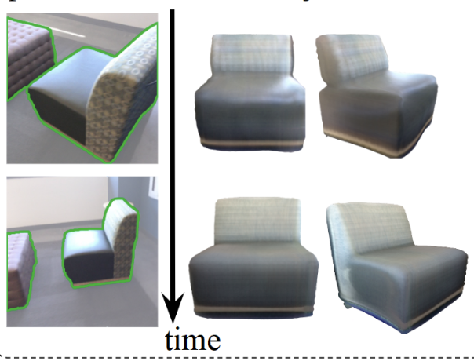
Partial-View Object View Synthesis via Filtered Inversion
F. Sun, J. Tremblay, V. Blukis, K. Lin, D. Xu,B. Ivanovic
, P. Karkus, S. Birchfield, D. Fox, R. Zhang, Y. Li, J. Wu, M. Pavone, N. Haber
Selected as Spotlight
[BibTeX] [PDF] [arXiv] [Paper] International Conference on 3D Vision (3DV) 2024@Inproceedings{FanYunTremblayEtAl2023, author = {Sun, F. and Tremblay, J. and Blukis, V. and Lin, K. and Xu, D. and Ivanovic, B. and Karkus, P. and Birchfield, S. and Fox, D. and Zhang, R. and Li, Y. and Wu, J. and Pavone, M. and Haber, N.}, title = {Partial-View Object View Synthesis via Filtered Inversion}, booktitle = {{International Conference on 3D Vision (3DV)}}, note = {Selected as Spotlight}, month = mar, year = {2024}, address = {Davos, Switzerland}, url = {https://arxiv.org/abs/2304.00673}, puburl = {https://ieeexplore.ieee.org/document/10550539} }
2023
-
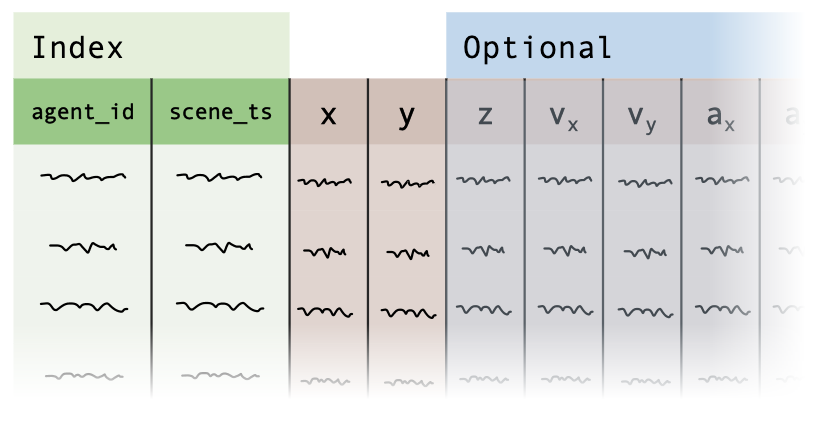
trajdata: A Unified Interface to Multiple Human Trajectory Datasets
B. Ivanovic
, G. Song, I. Gilitschenski, M. Pavone
[BibTeX] [PDF] [arXiv] [Paper] [Code] Neural Information Processing Systems (NeurIPS) Datasets and Benchmarks Track 2023@Inproceedings{IvanovicSongEtAl2023, author = {Ivanovic, B. and Song, G. and Gilitschenski, I. and Pavone, M.}, title = {trajdata: A Unified Interface to Multiple Human Trajectory Datasets}, booktitle = {{Neural Information Processing Systems (NeurIPS) Datasets and Benchmarks Track}}, month = dec, year = {2023}, address = {New Orleans, USA}, url = {https://arxiv.org/abs/2307.13924}, code = {https://github.com/NVlabs/trajdata}, puburl = {https://proceedings.neurips.cc/paper_files/paper/2023/hash/57bb67dbe17bfb660c8c63d089ea05b9-Abstract-Datasets_and_Benchmarks.html} }
-
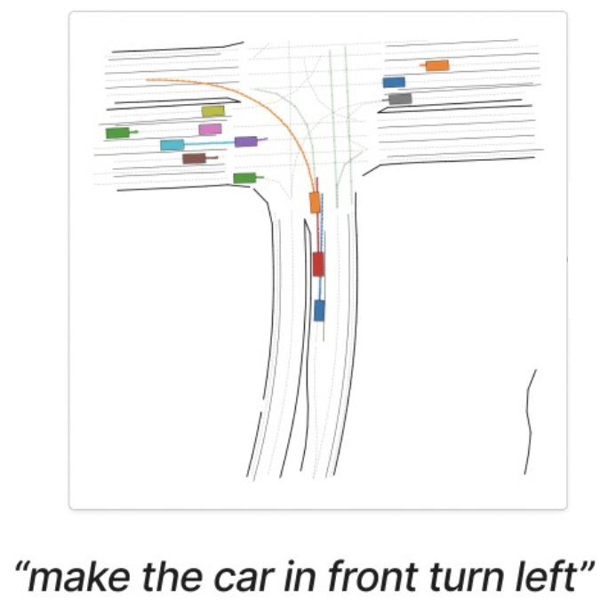
Language Conditioned Traffic Generation
S. Tan,B. Ivanovic
, X. Weng, M. Pavone, P. Kraehenbuehl
[BibTeX] [PDF] [arXiv] [Paper] [Code] Conference on Robot Learning (CoRL) 2023@Inproceedings{TanIvanovicEtAl2023, author = {Tan, S. and Ivanovic, B. and Weng, X. and Pavone, M. and Kraehenbuehl, P.}, title = {Language Conditioned Traffic Generation}, booktitle = {{Conference on Robot Learning (CoRL)}}, month = nov, year = {2023}, address = {Atlanta, USA}, url = {https://arxiv.org/abs/2307.07947}, code = {https://github.com/Ariostgx/lctgen}, puburl = {https://proceedings.mlr.press/v229/tan23a.html} }
-
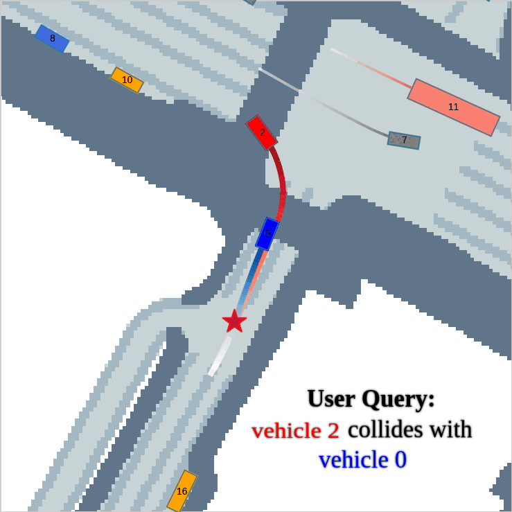
Language-Guided Traffic Simulation via Scene-Level Diffusion
Z. Zhong, D. Rempe, Y. Chen,B. Ivanovic
, Y. Cao, D. Xu, M. Pavone, B. Ray
Selected for Oral Presentation
[BibTeX] [PDF] [arXiv] [Paper] Conference on Robot Learning (CoRL) 2023@Inproceedings{ZhongRempeEtAl2023, author = {Zhong, Z. and Rempe, D. and Chen, Y. and Ivanovic, B. and Cao, Y. and Xu, D. and Pavone, M. and Ray, B.}, title = {Language-Guided Traffic Simulation via Scene-Level Diffusion}, booktitle = {{Conference on Robot Learning (CoRL)}}, month = nov, year = {2023}, address = {Atlanta, USA}, note = {Selected for Oral Presentation}, url = {https://arxiv.org/abs/2306.06344}, puburl = {https://proceedings.mlr.press/v229/zhong23a.html} }
-
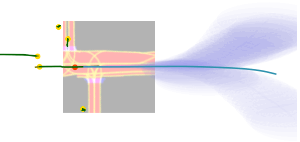
Expanding the Deployment Envelope of Behavior Prediction via Adaptive Meta-Learning
B. Ivanovic
, J. Harrison, M. Pavone
[BibTeX] [PDF] [arXiv] [Paper] [Code] IEEE International Conference on Robotics and Automation (ICRA) 2023@Inproceedings{IvanovicHarrisonEtAl2023, author = {Ivanovic, B. and Harrison, J. and Pavone, M.}, title = {Expanding the Deployment Envelope of Behavior Prediction via Adaptive Meta-Learning}, booktitle = {{IEEE International Conference on Robotics and Automation (ICRA)}}, month = may, year = {2023}, address = {London, UK}, owner = {borisi}, timestamp = {2023-01-18}, url = {https://arxiv.org/abs/2209.11820}, code = {https://github.com/NVlabs/adaptive-prediction}, puburl = {https://ieeexplore.ieee.org/document/10160583} }
-
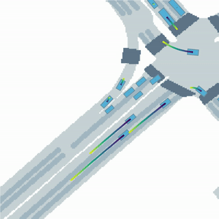
BITS: Bi-level Imitation for Traffic Simulation
D. Xu, Y. Chen,B. Ivanovic
, M. Pavone
[BibTeX] [PDF] [arXiv] [Paper] IEEE International Conference on Robotics and Automation (ICRA) 2023@Inproceedings{XuChenEtAl2023, author = {Xu, D. and Chen, Y. and Ivanovic, B. and Pavone, M.}, title = {{BITS}: Bi-level Imitation for Traffic Simulation}, booktitle = {{IEEE International Conference on Robotics and Automation (ICRA)}}, month = may, year = {2023}, address = {London, UK}, owner = {borisi}, timestamp = {2023-01-18}, url = {https://arxiv.org/abs/2208.12403}, puburl = {https://ieeexplore.ieee.org/document/10161457} }
-
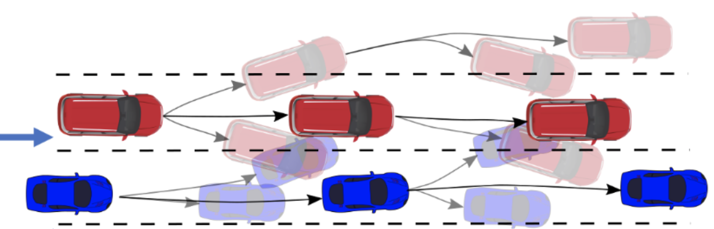
Tree-structured Policy Planning with Learned Behavior Models
Y. Chen, P. Karkus,B. Ivanovic
, X. Weng, M. Pavone
[BibTeX] [PDF] [arXiv] IEEE International Conference on Robotics and Automation (ICRA) 2023@Inproceedings{ChenKarkusEtAl2023, author = {Chen, Y. and Karkus, P. and Ivanovic, B. and Weng, X. and Pavone, M.}, title = {Tree-structured Policy Planning with Learned Behavior Models}, booktitle = {{IEEE International Conference on Robotics and Automation (ICRA)}}, month = may, year = {2023}, address = {London, UK}, owner = {borisi}, timestamp = {2023-01-18}, url = {https://arxiv.org/abs/2301.11902} }
-
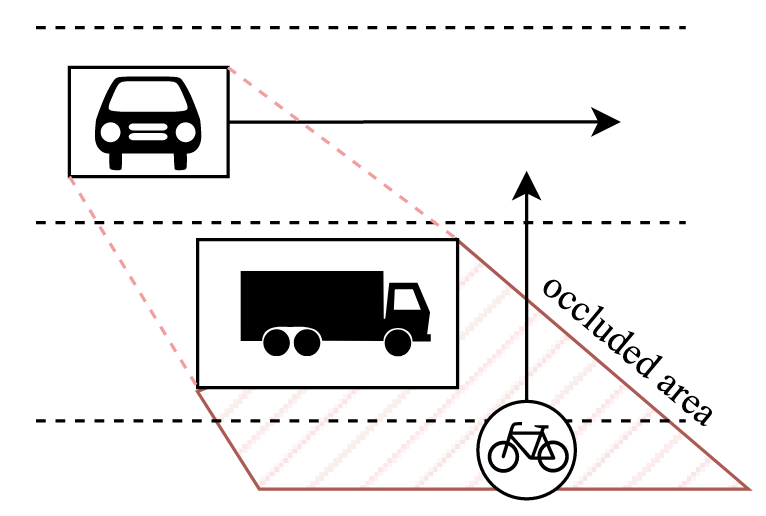
Planning with Occluded Traffic Agents using Bi-Level Variational Occlusion Models
F. Christianos, P. Karkus,B. Ivanovic
, S. V. Albrecht, M. Pavone
[BibTeX] [PDF] [arXiv] IEEE International Conference on Robotics and Automation (ICRA) 2023@Inproceedings{ChristianosKarkusEtAl2023, author = {Christianos, F. and Karkus, P. and Ivanovic, B. and Albrecht, S. V. and Pavone, M.}, title = {Planning with Occluded Traffic Agents using Bi-Level Variational Occlusion Models}, booktitle = {{IEEE International Conference on Robotics and Automation (ICRA)}}, month = may, year = {2023}, address = {London, UK}, owner = {borisi}, timestamp = {2023-01-18}, url = {https://arxiv.org/abs/2210.14584} }
-
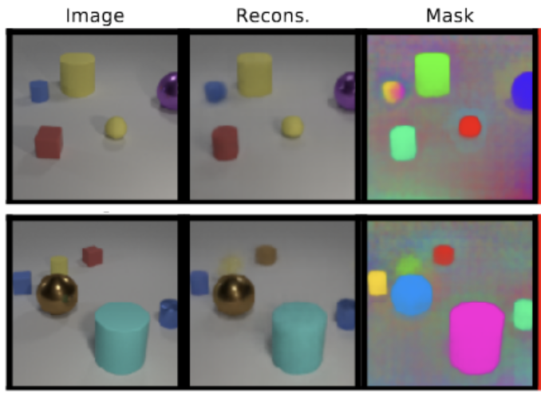
Robust and Controllable Object-Centric Learning through Energy-based Models
R. Zhang, T. Che,B. Ivanovic
, R. Wang, M. Pavone, Y. Bengio, L. Paull
[BibTeX] [PDF] [arXiv] [Paper] International Conference on Learning Representations (ICLR) 2023@Inproceedings{ZhangCheEtAl2023, author = {Zhang, R. and Che, T. and Ivanovic, B. and Wang, R. and Pavone, M. and Bengio, Y. and Paull, L.}, title = {Robust and Controllable Object-Centric Learning through Energy-based Models}, booktitle = {{International Conference on Learning Representations (ICLR)}}, month = may, year = {2023}, address = {Kigali, Rwanda}, owner = {borisi}, timestamp = {2023-01-20}, url = {https://arxiv.org/abs/2210.05519}, puburl = {https://openreview.net/forum?id=wcNtbEtcGIC} }
2022
-
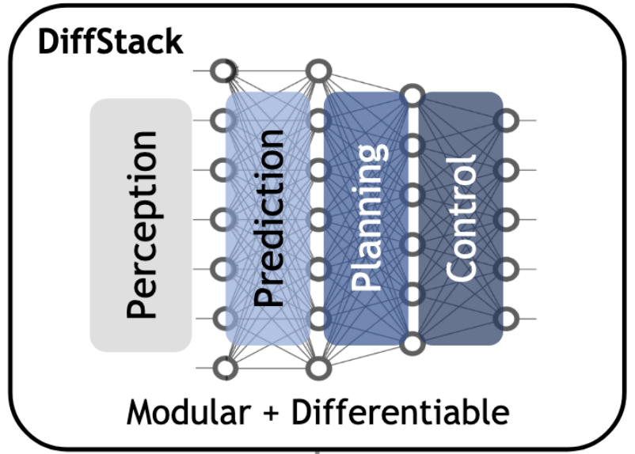
DiffStack: A Differentiable and Modular Control Stack for Autonomous Vehicles
P. Karkus,B. Ivanovic
, S. Mannor, M. Pavone
[BibTeX] [PDF] [Paper] [Code] Conference on Robot Learning (CoRL) 2022@Inproceedings{KarkusIvanovicEtAl2022, author = {Karkus, P. and Ivanovic, B. and Mannor, S. and Pavone, M.}, title = {DiffStack: A Differentiable and Modular Control Stack for Autonomous Vehicles}, booktitle = {{Conference on Robot Learning (CoRL)}}, month = dec, year = {2022}, address = {Auckland, New Zealand}, owner = {borisi}, timestamp = {2022-09-24}, url = {https://openreview.net/pdf?id=teEnA3L4aRe}, code = {https://github.com/NVlabs/diffstack}, puburl = {https://proceedings.mlr.press/v205/karkus23a.html} }
-
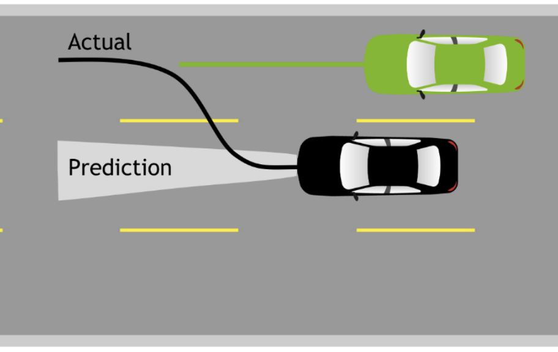
Task-Relevant Failure Detection for Trajectory Predictors in Autonomous Vehicles
A. Farid, S. Veer,B. Ivanovic
, K. Leung, M. Pavone
[BibTeX] [PDF] [Paper] Conference on Robot Learning (CoRL) 2022@Inproceedings{FaridVeerEtAl2022, author = {Farid, A. and Veer, S. and Ivanovic, B. and Leung, K. and Pavone, M.}, title = {Task-Relevant Failure Detection for Trajectory Predictors in Autonomous Vehicles}, booktitle = {{Conference on Robot Learning (CoRL)}}, month = dec, year = {2022}, address = {Auckland, New Zealand}, owner = {borisi}, timestamp = {2022-09-24}, url = {https://openreview.net/forum?id=oPRhm0Aben_}, puburl = {https://proceedings.mlr.press/v205/farid23a.html} }
-
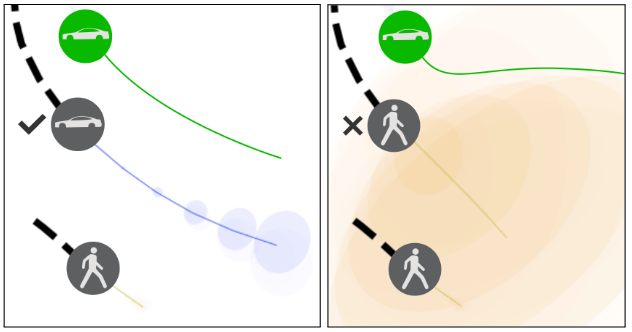
Heterogeneous-Agent Trajectory Forecasting Incorporating Class Uncertainty
B. Ivanovic
, K. Lee, P. Tokmakov, B. Wulfe, R. McAllister, A. Gaidon, M. Pavone
[BibTeX] [PDF] [arXiv] [Paper] IEEE/RSJ International Conference on Intelligent Robots and Systems (IROS) 2022@Inproceedings{IvanovicLeeEtAl2022, author = {Ivanovic, B. and Lee, K. and Tokmakov, P. and Wulfe, B. and McAllister, R. and Gaidon, A. and Pavone, M.}, title = {Heterogeneous-Agent Trajectory Forecasting Incorporating Class Uncertainty}, booktitle = {{IEEE/RSJ International Conference on Intelligent Robots and Systems (IROS)}}, month = oct, year = {2022}, address = {Kyoto, Japan}, owner = {borisi}, timestamp = {2021-10-12}, url = {https://arxiv.org/abs/2104.12446}, puburl = {https://ieeexplore.ieee.org/document/9981095} }
-
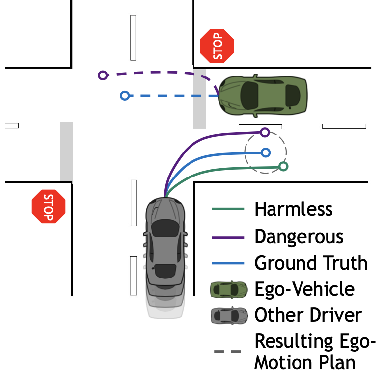
Injecting Planning-Awareness into Prediction and Detection Evaluation
B. Ivanovic
, M. Pavone
[BibTeX] [PDF] [arXiv] [Paper] [Code] IEEE Intelligent Vehicles Symposium (IV) 2022@Inproceedings{IvanovicPavone2022, author = {Ivanovic, B. and Pavone, M.}, title = {Injecting Planning-Awareness into Prediction and Detection Evaluation}, month = jun, year = {2022}, address = {Aachen, Germany}, booktitle = {{IEEE Intelligent Vehicles Symposium (IV)}}, owner = {borisi}, timestamp = {2021-10-12}, url = {https://arxiv.org/abs/2110.03270}, code = {https://github.com/BorisIvanovic/PlanningAwareEvaluation}, puburl = {https://ieeexplore.ieee.org/document/9827101} }
-
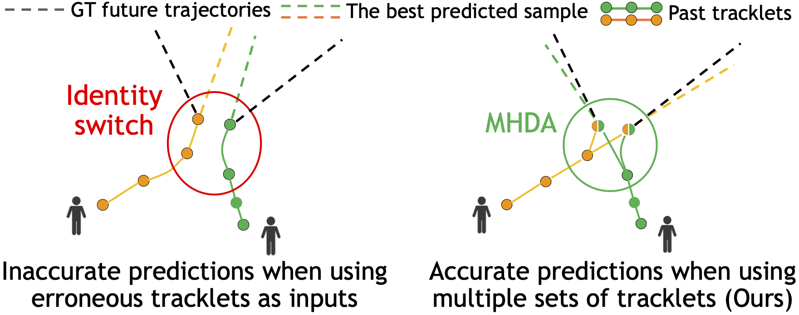
MTP: Multi-hypothesis Tracking and Prediction for Reduced Error Propagation
X. Weng,B. Ivanovic
, M. Pavone
[BibTeX] [PDF] [arXiv] [Paper] IEEE Intelligent Vehicles Symposium (IV) 2022@Inproceedings{WengIvanovicEtAl2022a, author = {Weng, X. and Ivanovic, B. and Pavone, M.}, title = {MTP: Multi-hypothesis Tracking and Prediction for Reduced Error Propagation}, month = jun, year = {2022}, address = {Aachen, Germany}, booktitle = {{IEEE Intelligent Vehicles Symposium (IV)}}, owner = {borisi}, timestamp = {2021-10-12}, url = {https://arxiv.org/abs/2110.09481}, puburl = {https://ieeexplore.ieee.org/document/9827315} }
-
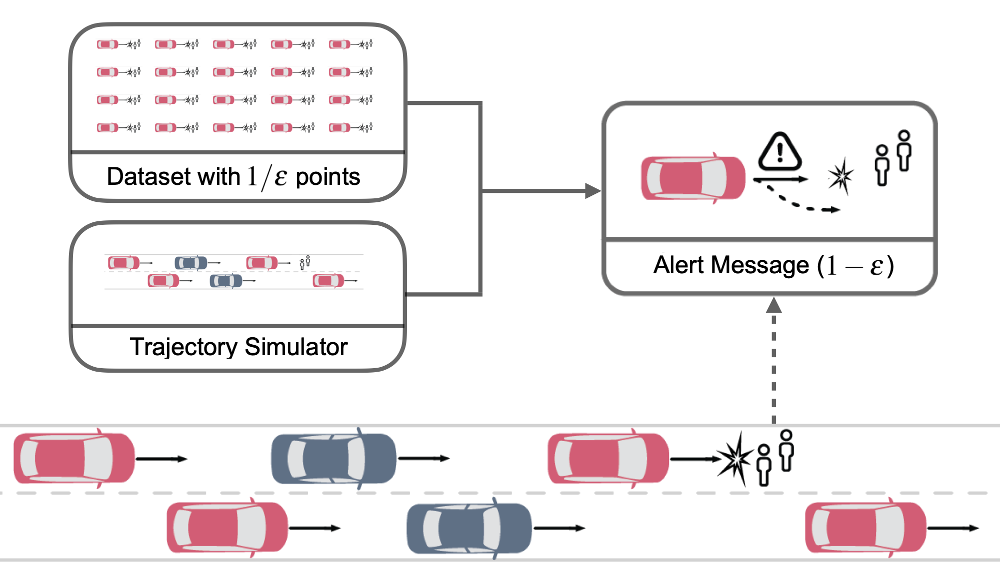
Sample-Efficient Safety Assurances using Conformal Prediction
R. Luo, S. Zhao, J. Kuck,B. Ivanovic
, S. Savarese, E. Schmerling, M. Pavone
[BibTeX] [PDF] [arXiv] Workshop on the Algorithmic Foundations of Robotics (WAFR) 2022@Inproceedings{LuoZhaoEtAl2022, author = {Luo, R. and Zhao, S. and Kuck, J. and Ivanovic, B. and Savarese, S. and Schmerling, E. and Pavone, M.}, title = {Sample-Efficient Safety Assurances using Conformal Prediction}, month = jun, year = {2022}, address = {College Park, MD, USA}, booktitle = {{Workshop on the Algorithmic Foundations of Robotics (WAFR)}}, owner = {borisi}, timestamp = {2021-10-12}, url = {https://arxiv.org/abs/2109.14082} }
-
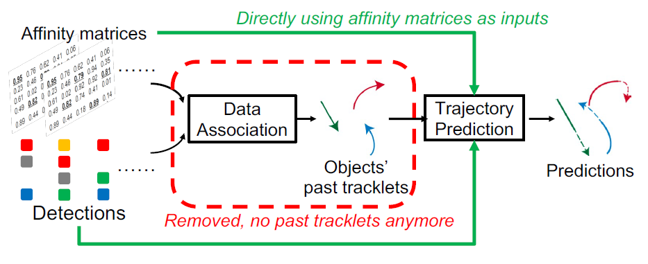
Whose Track Is It Anyway? Improving Robustness to Tracking Errors with Affinity-Based Prediction
X. Weng,B. Ivanovic
, M. Pavone
[BibTeX] [Paper] IEEE/CVF Conference on Computer Vision and Pattern Recognition (CVPR) 2022@Inproceedings{WengIvanovicEtAl2022b, author = {Weng, X. and Ivanovic, B. and Pavone, M.}, title = {Whose Track Is It Anyway? Improving Robustness to Tracking Errors with Affinity-Based Prediction}, booktitle = {{IEEE/CVF Conference on Computer Vision and Pattern Recognition (CVPR)}}, month = jun, year = {2022}, address = {New Orleans, USA}, owner = {borisi}, timestamp = {2022-03-25}, url = {}, puburl = {https://openaccess.thecvf.com/content/CVPR2022/html/Weng_Whose_Track_Is_It_Anyway_Improving_Robustness_to_Tracking_Errors_CVPR_2022_paper.html} }
-
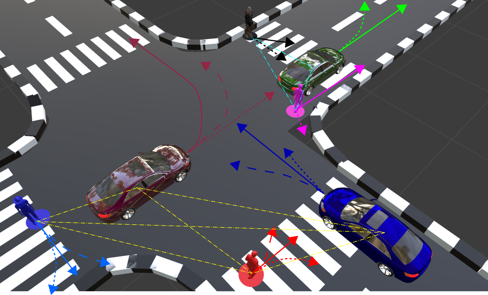
ScePT: Scene-consistent, Policy-based Trajectory Predictions for Planning
Y. Chen,B. Ivanovic
, M. Pavone
[BibTeX] [Paper] [Code] IEEE/CVF Conference on Computer Vision and Pattern Recognition (CVPR) 2022@Inproceedings{ChenIvanovicEtAl2022, author = {Chen, Y. and Ivanovic, B. and Pavone, M.}, title = {{ScePT}: Scene-consistent, Policy-based Trajectory Predictions for Planning}, booktitle = {{IEEE/CVF Conference on Computer Vision and Pattern Recognition (CVPR)}}, month = jun, year = {2022}, address = {New Orleans, USA}, owner = {borisi}, timestamp = {2022-03-25}, url = {}, code = {https://github.com/NVlabs/ScePT}, puburl = {https://openaccess.thecvf.com/content/CVPR2022/html/Chen_ScePT_Scene-Consistent_Policy-Based_Trajectory_Predictions_for_Planning_CVPR_2022_paper.html} }
-
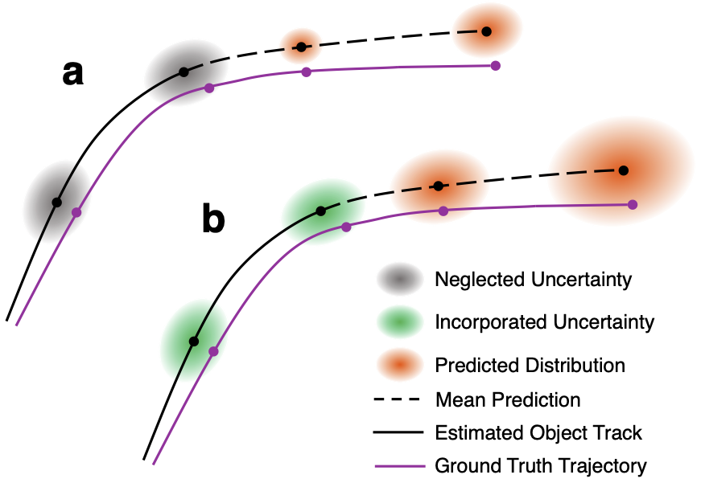
Propagating State Uncertainty Through Trajectory Forecasting
B. Ivanovic
, Y. Lin, S. Shrivastava, P. Chakravarty, M. Pavone
[BibTeX] [PDF] [arXiv] [Paper] [Code] IEEE International Conference on Robotics and Automation (ICRA) 2022@Inproceedings{IvanovicLinEtAl2022, author = {Ivanovic, B. and Lin, Y. and Shrivastava, S. and Chakravarty, P. and Pavone, M.}, title = {Propagating State Uncertainty Through Trajectory Forecasting}, booktitle = {{IEEE International Conference on Robotics and Automation (ICRA)}}, month = may, year = {2022}, address = {Philadelphia, USA}, owner = {borisi}, timestamp = {2021-10-12}, url = {https://arxiv.org/abs/2110.03267}, code = {https://github.com/StanfordASL/PSU-TF}, puburl = {https://ieeexplore.ieee.org/document/9811776} }
2021
-
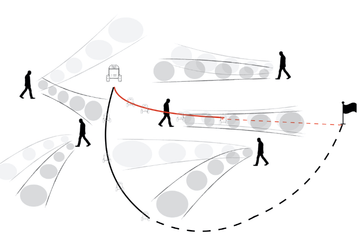
Leveraging Neural Network Gradients within Trajectory Optimization for Proactive Human-Robot Interactions
S. Schaefer, K. Leung,B. Ivanovic
, M. Pavone
[BibTeX] [PDF] [arXiv] [Paper] IEEE International Conference on Robotics and Automation (ICRA) 2021@Inproceedings{SchaeferLeungEtAl2021, author = {Schaefer, S. and Leung, K. and Ivanovic, B. and Pavone, M.}, title = {Leveraging Neural Network Gradients within Trajectory Optimization for Proactive Human-Robot Interactions}, booktitle = {{IEEE International Conference on Robotics and Automation (ICRA)}}, year = {2021}, address = {Xi'an, China}, month = may, url = {https://arxiv.org/abs/2012.01027}, owner = {borisi}, timestamp = {2020-11-01}, puburl = {https://ieeexplore.ieee.org/document/9561786} }
-
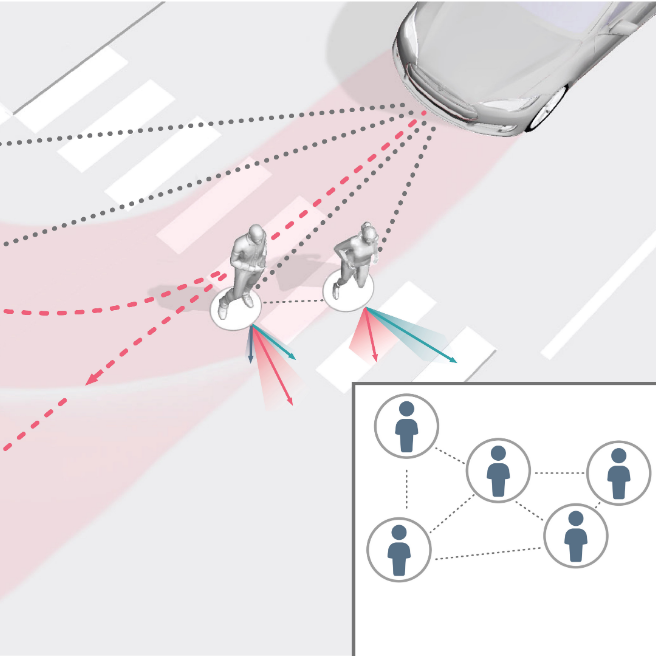
Multimodal Deep Generative Models for Trajectory Prediction: A Conditional Variational Autoencoder Approach
B. Ivanovic
, K. Leung, E. Schmerling, M. Pavone
[BibTeX] [PDF] [arXiv] [Paper] IEEE Robotics and Automation Letters (RA-L) 2021@article{IvanovicLeungEtAl2020, author = {Ivanovic, B. and Leung, K. and Schmerling, E. and Pavone, M.}, title = {Multimodal Deep Generative Models for Trajectory Prediction: A Conditional Variational Autoencoder Approach}, journal = {{IEEE Robotics and Automation Letters (RA-L)}}, volume = {6}, number = {2}, pages = {295--302}, year = {2021}, note = {In Press}, month = apr, url = {https://arxiv.org/pdf/2008.03880.pdf}, keywords = {press}, puburl = {https://ieeexplore.ieee.org/document/9286651} }
2020
-
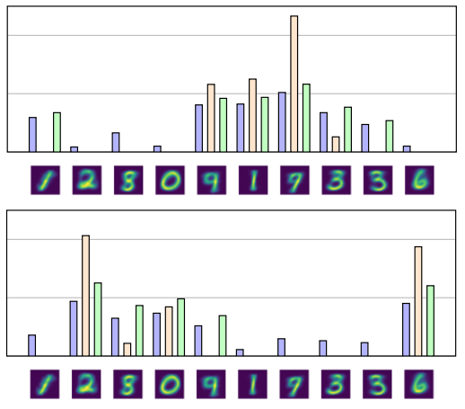
Evidential Sparsification of Multimodal Latent Spaces in Conditional Variational Autoencoders
M. Itkina,B. Ivanovic
, R. Senanayake, M. J. Kochenderfer, M. Pavone
[BibTeX] [PDF] [arXiv] [Paper] Advances in Neural Information Processing Systems (NeurIPS) 2020@Inproceedings{ItkinaIvanovicEtAl2020, author = {Itkina, M. and Ivanovic, B. and Senanayake, R. and Kochenderfer, M. J. and Pavone, M.}, title = {Evidential Sparsification of Multimodal Latent Spaces in Conditional Variational Autoencoders}, booktitle = {{Advances in Neural Information Processing Systems (NeurIPS)}}, year = {2020}, address = {Virtual}, month = {12}, url = {https://arxiv.org/pdf/2010.09164.pdf}, puburl = {https://proceedings.neurips.cc/paper/2020/hash/73f95ee473881dea4afd89c06165fa66-Abstract.html} }
-
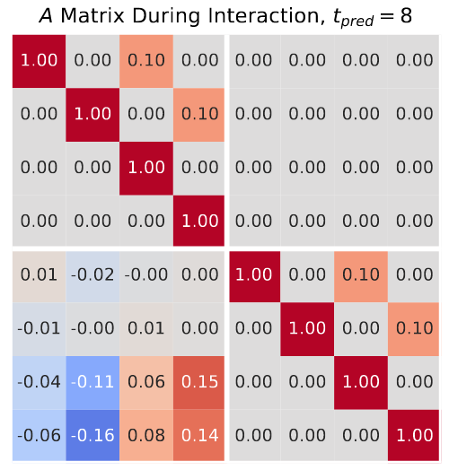
MATS: An Interpretable Trajectory Forecasting Representation for Planning and Control
B. Ivanovic
, A. Elhafsi, G. Rosman, A. Gaidon, M. Pavone
[BibTeX] [PDF] [arXiv] [Paper] [Code] Conference on Robot Learning (CoRL) 2020@Inproceedings{IvanovicElhafsiEtAl2020, author = {Ivanovic, B. and Elhafsi, A. and Rosman, G. and Gaidon, A. and Pavone, M.}, title = {MATS: An Interpretable Trajectory Forecasting Representation for Planning and Control}, booktitle = {{Conference on Robot Learning (CoRL)}}, year = {2020}, address = {Virtual}, month = {11}, abstract = {Reasoning about human motion is a core component of modern human-robot interactive systems. In particular, one of the main uses of behavior prediction in autonomous systems is to inform ego-robot motion planning and control. However, a majority of planning and control algorithms reason about system dynamics rather than the predicted agent tracklets that are commonly output by trajectory forecasting methods, which can hinder their integration. Towards this end, we propose Mixtures of Affine Time-varying Systems (MATS) as an output representation for trajectory forecasting that is more amenable to downstream planning and control use. Our approach leverages successful ideas from probabilistic trajectory forecasting works to learn dynamical system representations that are well-studied in the planning and control literature. We integrate our predictions with a proposed multimodal planning methodology and demonstrate significant computational efficiency improvements on a large-scale autonomous driving dataset.}, url = {https://arxiv.org/pdf/2009.07517.pdf}, code = {https://github.com/StanfordASL/MATS}, puburl = {https://proceedings.mlr.press/v155/ivanovic21a.html} }
-
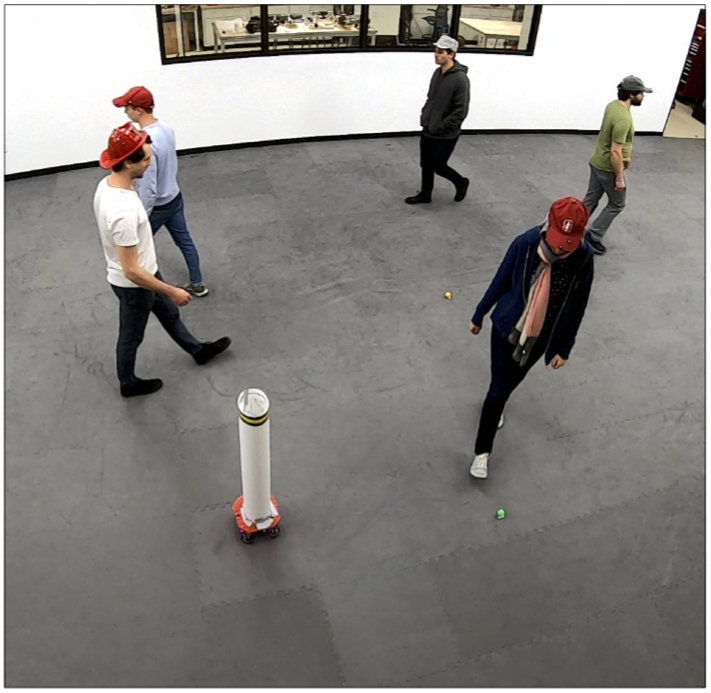
Risk-Sensitive Sequential Action Control with Multi-Modal Human Trajectory Forecasting for Safe Crowd-Robot Interaction
H. Nishimura,B. Ivanovic
, A. Gaidon, M. Pavone, M. Schwager
[BibTeX] [PDF] [arXiv] [Paper] IEEE/RSJ International Conference on Intelligent Robots and Systems (IROS) 2020@Inproceedings{NishimuraIvanovicEtAl2020, author = {Nishimura, H. and Ivanovic, B. and Gaidon, A. and Pavone, M. and Schwager, M.}, title = {Risk-Sensitive Sequential Action Control with Multi-Modal Human Trajectory Forecasting for Safe Crowd-Robot Interaction}, booktitle = {{IEEE/RSJ International Conference on Intelligent Robots and Systems (IROS)}}, year = {2020}, address = {Virtual}, month = {10}, url = {https://arxiv.org/pdf/2009.05702.pdf}, puburl = {https://ieeexplore.ieee.org/document/9341137} }
-
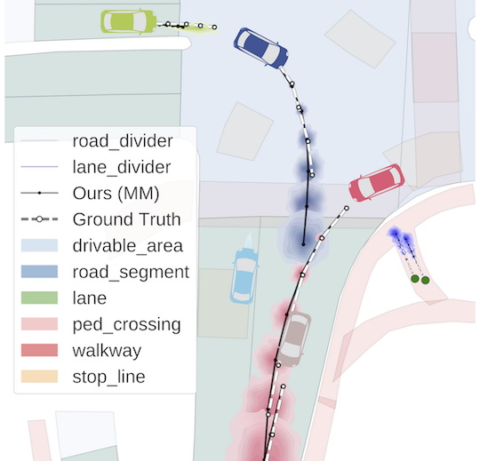
Trajectron++: Dynamically-Feasible Trajectory Forecasting With Heterogeneous Data
T. Salzmann,B. Ivanovic
, P. Chakravarty, M. Pavone
3rd place in the ICRA 2020 nuScenes Prediction Challenge
[BibTeX] [PDF] [arXiv] [Paper] [Code] European Conference on Computer Vision (ECCV) 2020@Inproceedings{SalzmannIvanovicEtAl2020, author = {Salzmann, T. and Ivanovic, B. and Chakravarty, P. and Pavone, M.}, title = {Trajectron++: Dynamically-Feasible Trajectory Forecasting With Heterogeneous Data}, booktitle = {{European Conference on Computer Vision (ECCV)}}, year = {2020}, address = {Virtual}, month = {8}, abstract = {Reasoning about human motion is an important prerequisite to safe and socially-aware robotic navigation. As a result, multi-agent behavior prediction has become a core component of modern human-robot interactive systems, such as self-driving cars. While there exist many methods for trajectory forecasting, most do not enforce dynamic constraints and do not account for environmental information (e.g., maps). Towards this end, we present Trajectron++, a modular, graph-structured recurrent model that forecasts the trajectories of a general number of diverse agents while incorporating agent dynamics and heterogeneous data (e.g., semantic maps). Trajectron++ is designed to be tightly integrated with robotic planning and control frameworks; for example, it can produce predictions that are optionally conditioned on ego-agent motion plans. We demonstrate its performance on several challenging real-world trajectory forecasting datasets, outperforming a wide array of state-of-the-art deterministic and generative methods.}, url = {https://arxiv.org/pdf/2001.03093.pdf}, note = {3rd place in the ICRA 2020 nuScenes Prediction Challenge}, code = {https://github.com/StanfordASL/Trajectron-plus-plus}, puburl = {https://www.ecva.net/papers/eccv_2020/papers_ECCV/html/3094_ECCV_2020_paper.php} }
-
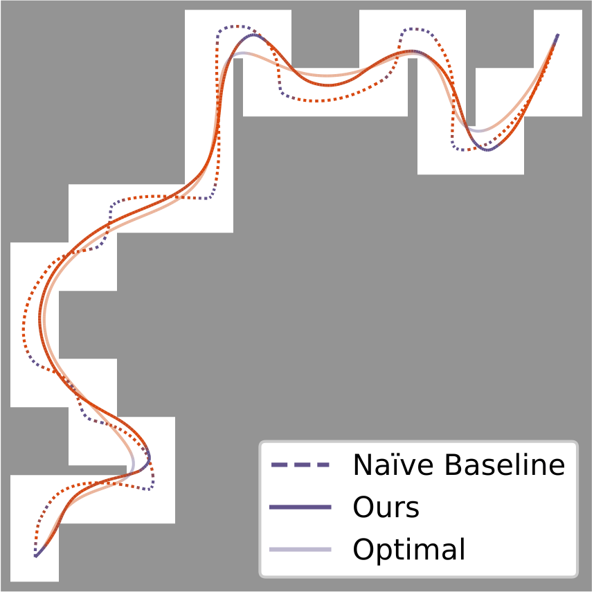
Map-Predictive Motion Planning in Unknown Environments
A. Elhafsi,B. Ivanovic
, L. Janson, M. Pavone
[BibTeX] [PDF] [arXiv] [Paper] IEEE International Conference on Robotics and Automation (ICRA) 2020@Inproceedings{ElhafsiIvanovicEtAl2020, author = {Elhafsi, A. and Ivanovic, B. and Janson, L. and Pavone, M.}, title = {Map-Predictive Motion Planning in Unknown Environments}, booktitle = {{IEEE International Conference on Robotics and Automation (ICRA)}}, year = {2020}, address = {Virtual}, month = {6}, abstract = {Algorithms for motion planning in unknown environments are generally limited in their ability to reason about the structure of the unobserved environment. As such, current methods generally navigate unknown environments by relying on heuristic methods to choose intermediate objectives along frontiers. We present a unified method that combines map prediction and motion planning for safe, time-efficient autonomous navigation of unknown environments by dynamically-constrained robots. We propose a data-driven method for predicting the map of the unobserved environment, using the robot's observations of its surroundings as context. These map predictions are then used to plan trajectories from the robot's position to the goal without requiring frontier selection. We demonstrate that our map-predictive motion planning strategy yields a substantial improvement in trajectory time over a naive frontier pursuit method and demonstrates similar performance to methods using more sophisticated frontier selection heuristics with significantly shorter computation time.}, url = {https://arxiv.org/pdf/1910.08184.pdf}, puburl = {https://ieeexplore.ieee.org/document/9196803} }
2019
-
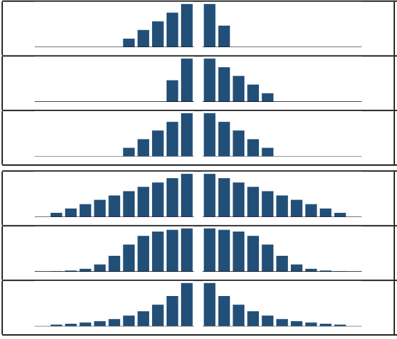
The Trajectron: Probabilistic Multi-Agent Trajectory Modeling with Dynamic Spatiotemporal Graphs
B. Ivanovic
, M. Pavone
[BibTeX] [PDF] [arXiv] [Paper] [Code] IEEE/CVF International Conference on Computer Vision (ICCV) 2019@Inproceedings{IvanovicPavone2019, author = {Ivanovic, B. and Pavone, M.}, title = {The {Trajectron}: Probabilistic Multi-Agent Trajectory Modeling with Dynamic Spatiotemporal Graphs}, booktitle = {{IEEE/CVF International Conference on Computer Vision (ICCV)}}, year = {2019}, abstract = {Developing safe human-robot interaction systems is a necessary step towards the widespread integration of autonomous agents in society. A key component of such systems is the ability to reason about the many potential futures (e.g. trajectories) of other agents in the scene. Towards this end, we present the Trajectron, a graph-structured model that predicts many potential future trajectories of multiple agents simultaneously in both highly dynamic and multimodal scenarios (i.e. where the number of agents in the scene is time-varying and there are many possible highly-distinct futures for each agent). It combines tools from recurrent sequence modeling and variational deep generative modeling to produce a distribution of future trajectories for each agent in a scene. We demonstrate the performance of our model on several datasets, obtaining state-of-the-art results on standard trajectory prediction metrics as well as introducing a new metric for comparing models that output distributions.}, address = {Seoul, South Korea}, month = {10}, url = {https://arxiv.org/pdf/1810.05993.pdf}, timestamp = {2019-07-22}, code = {https://github.com/StanfordASL/Trajectron}, puburl = {https://openaccess.thecvf.com/content_ICCV_2019/html/Ivanovic_The_Trajectron_Probabilistic_Multi-Agent_Trajectory_Modeling_With_Dynamic_Spatiotemporal_Graphs_ICCV_2019_paper.html} }
-
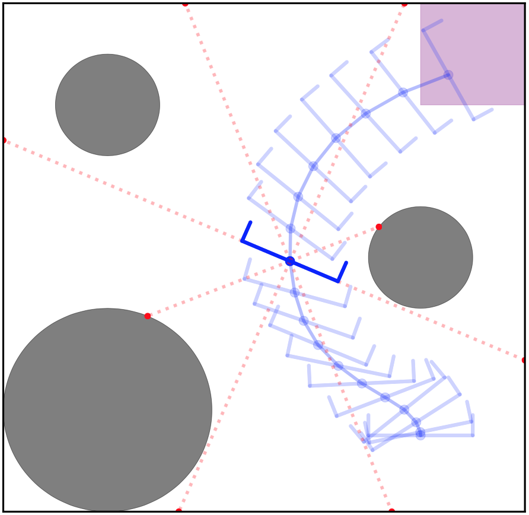
BaRC: Backward Reachability Curriculum for Robotic Reinforcement Learning
B. Ivanovic
, J. Harrison, A. Sharma, M. Chen, M. Pavone
[BibTeX] [PDF] [arXiv] [Paper] [Code] IEEE International Conference on Robotics and Automation (ICRA) 2019@inproceedings{IvanovicHarrisonEtAl2019, author = {Ivanovic, B. and Harrison, J. and Sharma, A. and Chen, M. and Pavone, M.}, title = {{BaRC:} Backward Reachability Curriculum for Robotic Reinforcement Learning}, booktitle = {{IEEE International Conference on Robotics and Automation (ICRA)}}, year = {2019}, address = {Montreal, Canada}, month = {5}, url = {https://arxiv.org/pdf/1806.06161.pdf}, code = {https://github.com/StanfordASL/BaRC}, puburl = {https://ieeexplore.ieee.org/document/8793742} }
2018
-
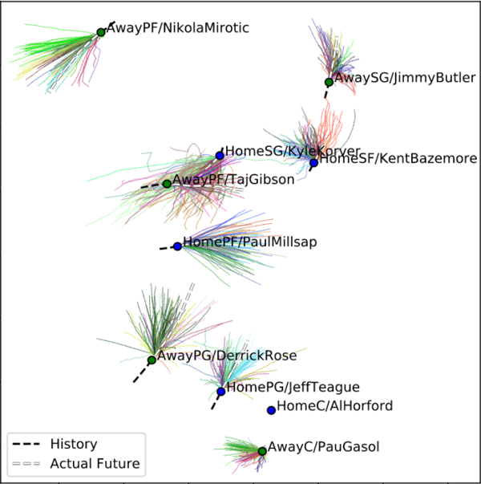
Generative Modeling of Multimodal Multi-Human Behavior
B. Ivanovic
, E. Schmerling, K. Leung, M. Pavone
[BibTeX] [PDF] [arXiv] [Paper] [Code] IEEE/RSJ International Conference on Intelligent Robots and Systems (IROS) 2018@Inproceedings{IvanovicEtAl2018, author = {Ivanovic, B. and Schmerling, E. and Leung, K. and Pavone, M.}, title = {Generative Modeling of Multimodal Multi-Human Behavior}, booktitle = {{IEEE/RSJ International Conference on Intelligent Robots and Systems (IROS)}}, year = {2018}, abstract = {This work presents a methodology for modeling and predicting human behavior in settings with N humans interacting in highly multimodal scenarios (i.e. where there are many possible highly-distinct futures). A motivating example includes robots interacting with humans in crowded environments, such as self-driving cars operating alongside human-driven vehicles or human-robot collaborative bin packing in a warehouse. Our approach to model human behavior in such uncertain environments is to model humans in the scene as nodes in a graphical model, with edges encoding relationships between them. For each human, we learn a multimodal probability distribution over future actions from a dataset of multi-human interactions. Learning such distributions is made possible by recent advances in the theory of conditional variational autoencoders and deep learning approximations of probabilistic graphical models. Specifically, we learn action distributions conditioned on interaction history, neighboring human behavior, and candidate future agent behavior in order to take into account response dynamics. We demonstrate the performance of such a modeling approach in modeling basketball player trajectories, a highly multimodal, multi-human scenario which serves as a proxy for many robotic applications.}, address = {Madrid, Spain}, month = {3}, url = {https://arxiv.org/pdf/1803.02015.pdf}, owner = {borisi}, timestamp = {2018-03-06}, code = {https://github.com/StanfordASL/NHumanModeling}, puburl = {https://ieeexplore.ieee.org/document/8594393} }
2017
-
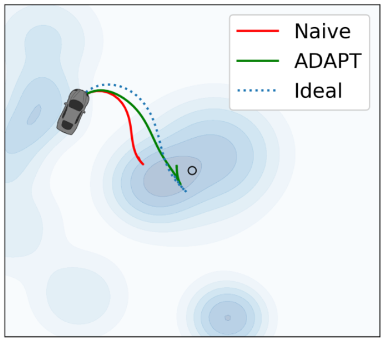
ADAPT: Zero-Shot Adaptive Policy Transfer for Stochastic Dynamical Systems
J. Harrison, A. Garg,B. Ivanovic
, Y. Zhu, S. Savarese, L. Fei-Fei, M. Pavone
[BibTeX] [PDF] [arXiv] [Paper] International Symposium on Robotics Research (ISRR) 2017@inproceedings{HarrisonEtAl2017, author = {Harrison, J. and Garg, A. and Ivanovic, B. and Zhu, Y. and Savarese, S. and Fei-Fei, L. and Pavone, M.}, title = {{ADAPT:} Zero-Shot Adaptive Policy Transfer for Stochastic Dynamical Systems}, booktitle = {{International Symposium on Robotics Research (ISRR)}}, year = {2017}, address = {Puerto Varas, Chile}, month = {12}, url = {https://arxiv.org/pdf/1707.04674.pdf}, keywords = {Reinforcement Learning, Policy Transfer, Model-Predictive Control}, puburl = {https://link.springer.com/chapter/10.1007/978-3-030-28619-4_50} }
Invited Talks
-
Architecting Next-Generation Robotic Autonomy Stacks
Stanford Robotics Seminar October 2023
ITSC Workshop on Cooperative Decision-making in Intelligent Transportation Systems September 2023
UC Berkeley SemiAutonomous Seminar August 2023
Silicon Valley AI Meetup July 2023
Apple Special Projects Group March 2023 -
Building Mapless Next-Generation Autonomy Stacks
IV Workshop on Bridging the Gap Between Map-based and Map-less Driving June 2023 -
Differentiable Robotics (with Peter Karkus)
ACC Workshop on Safe & Robust Learning for Perception-based Planning and Control July 2023
ACC Workshop on Differentiable Programming for Modeling and Control of Dynamical Systems July 2023 -
Effectively Integrating Behavior Prediction within the Modern Robotic Autonomy Stack
IV Social, Interactive and Safe Behaviors for AVs: Benchmarks, Models and Applications Workshop June 2023
Waterloo.AI Seminar Series November 2022
ICRA Workshop on Long-term Human Motion Prediction May 2022
Theses
-
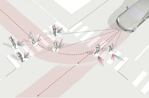
Trajectory Forecasting in the Modern Robotic Autonomy Stack
B. Ivanovic
, Ph.D. Thesis. Supervised by Marco Pavone
[PDF] [video] Stanford University, 2021 -
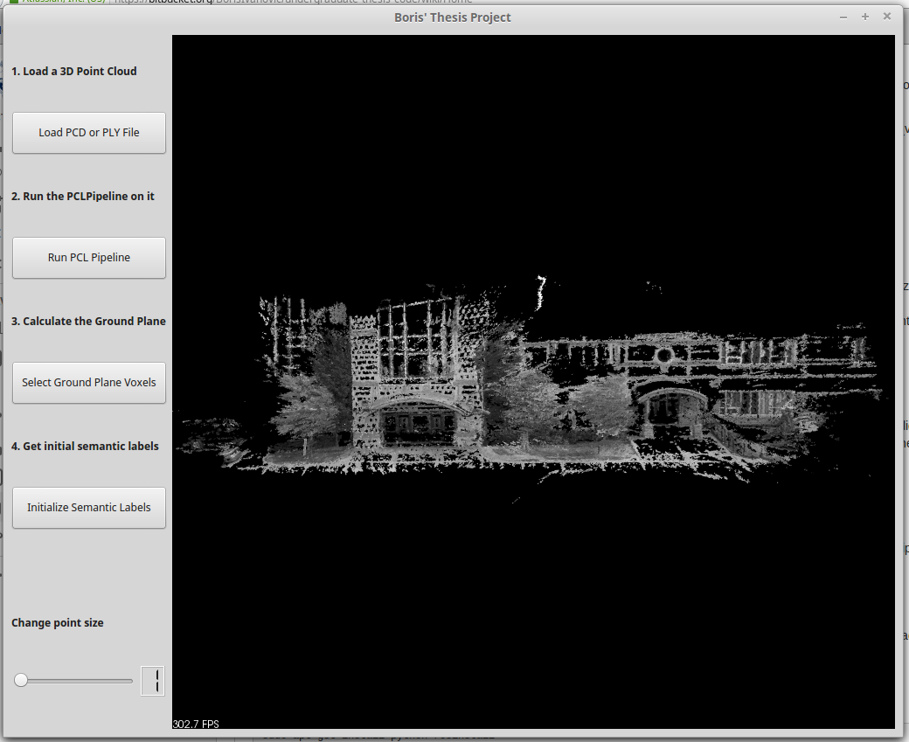
Streamlining the Training of 3D Scene Segmentation Models
B. Ivanovic
, Bachelor Thesis. Supervised by Raquel Urtasun and Sanja Fidler
[PDF] [files] University of Toronto, 2016
Blog Posts
-
Expanding the Alpamayo Open Platform for Developing Reasoning AVs Across Models, Data, and Simulation
B. Ivanovic
, M. Pavone
[Hugging Face Blog Post] March 2026 -
Building Autonomous Vehicles That Reason with NVIDIA Alpamayo
B. Ivanovic
, M. Pavone
[NVIDIA Blog Post] [Hugging Face Blog Post] January 2026 -
Back to the Future: Planning-Aware Trajectory Forecasting for Autonomous Driving
B. Ivanovic
[Post] [SAIL Blog] Stanford AI Lab (SAIL) 2020 -
How to Deploy Deep Learning Models with AWS Lambda and TensorFlow
B. Ivanovic
, Z. Ivanovic
5th most viewed blog post in all of AWS in 2018
[Post] [AWS Machine Learning Blog] Amazon Web Services (AWS) 2017
Service
Conference Reviewing
- IEEE/CVF Conference on Computer Vision and Pattern Recognition (CVPR): 2021, 2022, 2023
- European Conference on Computer Vision (ECCV): 2022
- International Conference on Learning Representations (ICLR): 2022
- International Conference on Machine Learning (ICML): 2020, 2021, 2022, 2023
- Neural Information Processing Systems (NeurIPS): 2019, 2020, 2021, 2022, 2023
- Learning for Dynamics & Control Conference (L4DC): 2023
- Robotics: Science and Systems (RSS): 2020, 2021
- Conference on Robot Learning (CoRL): 2023
- IEEE International Conference on Robotics and Automation (ICRA): 2020, 2021, 2022, 2023, 2024
- IEEE International Conference on Intelligent Robots and Systems (IROS): 2021, 2022, 2023
- IEEE Conference on Decision and Control (CDC): 2021
- IEEE-RAS International Conference on Humanoid Robots (Humanoids): 2020
- IEEE Intelligent Vehicles Symposium (IV): 2021, 2022
- IEEE Intelligent Transportation Systems Conference (ITSC): 2019
Journal Reviewing
- Nature Machine Intelligence: 2022
- Transactions on Machine Learning Research (TMLR): 2023
- IEEE Robotics and Automation Letters (RA-L): 2020, 2021, 2022, 2023
- IEEE Control Systems Letters (L-CSS): 2021
- IEEE Transactions on Pattern Analysis and Machine Intelligence (TPAMI): 2020, 2022
Fellowship Review Committees
- NVIDIA Graduate Fellowship: 2023, 2024
Workshop Organization
- 6th Workshop on Long-term Human Motion Prediction, ICRA 2024
- 5th Workshop on Long-term Human Motion Prediction, ICRA 2023
- Learning-powered Prediction and Decision-making for Autonomous Driving (LPAD), ITSC 2023